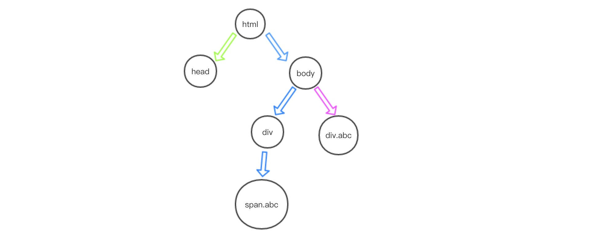

之前做项目一般都是使用jQuery，jQuery封装了很多方法包括选择器，使用起来非常方便。由此带来的问题是对于原生JS的API的了解与使用就变得特别少。这篇文章主要记录在项目中遇到的一些不熟悉的JS API。
1、获取页面元素
1）document.getElementById
这个API用于获取页面内有id的DOM。在如今的浏览器中会把id所对应的DOM当成window的全局变量，所以，如果给一个DOM定一个id，那么在获取DOM节点是可以直接以此id为全局变量，如果：1
2
3
4//结构
<header id="header"></header>
//JS
header.textContent = "header";
2）其他
其他不再进行详细介绍，分别有getElementsByTagName()、getELementsByClassName()，这两个获取的都是数组，使用其中的某一个元素的时候记得要按照数组使用方式。
2、querySelector/querySelectorAll
一般我们使用JS选择DOM常用的方法是documen.getElementById(id)、document.ElementsByTagName(tag)、document.getELementByClassName(name)这几种写法，如果DOM结构比较深需要层层深入去查询，如：1
document.getElementById('main').getElementsByTagName('ul')....getElementByClassName('class')
这种写法比较复杂。而querySelector()选择其的使用方法和jQuery很像。可以直接进行多层选择，如：1
document.querySelector('#main ul class');
并且querySelector()能够兼容到IE8。
1)document.querySelector
document.querySelector返回第一个匹配的元素。如果没有匹配元素则返回null。并且返回匹配的第一个元素按照深度优先搜索来获取元素。例如：1
2
3
4
5
6
7
8<div>
<span class="abc">
</span>
</div>
<div class="abc">
</div>
document.querySelector('.abc') //会返回span标签。
深度优先的意思是，对于一个树形结构，我们会从根结点开始，依次从其未被访问的分支出发逐个访问此分支上的每一个节点，直至访问完成。以上代码的树形结构为：

从最左侧分支开始查询，直至到达此分支的最后一个节点。所以会返回类名为abc的span标签。
2)document.querySelectorAll
此方法会返回所有匹配的元素，并且可以匹配多个选择器。如：1
2
3
4
5
6
7<div>
<span class="abc">
</span>
</div>
<div id="abc">
</div>
document.querySelectorAll('.abc,#abc')
此种方法能够返回类型或者id是abc的元素。
3、父/子/兄弟节点
代码如下：1
2
3
4
5
6
7
8
9
10
11
12
13
14
15
16
17
18
19
20
21
22
23
24
25
26
27
28
29...
<div class="main">
<ul>
<li class="item">
<a href="javascript:;">标题一</a>
</li>
<li class="item" id="title">
<a href="javascript:;">标题二</a>
</li>
<li class="item">
<a href="javascript:;">标题三</a>
</li>
<li class="item">
<a href="javascript:;">标题四</a>
</li>
</ul>
</div>
...
....JS..以下以id为title元素为例子..
//获取父元素
var parentNode = title.parentNode;
var parentElement = title.parentElement;
//获取习兄弟节点
var prevSibling = title.previousSibling;
var nextSibling = title.nextSibling;
//获取子元素
var children = title.children; //获得div下的所有子标签
var childrenNode = title.childNodes; //获得div下的所有子标签加文本标签
..........
具体输出请查看示例
4、获取属性getAttribute()
1 | var attr01 = title.querySelector('a').href; //此种方法浏览器会自带协议 |
具体输出请查看示例
4、视口相关位置

1
window.scrollTo(x,y); //页面滚动到一定位置，x为x轴位置，y为y轴位置
个人原创，转载请注明出处。